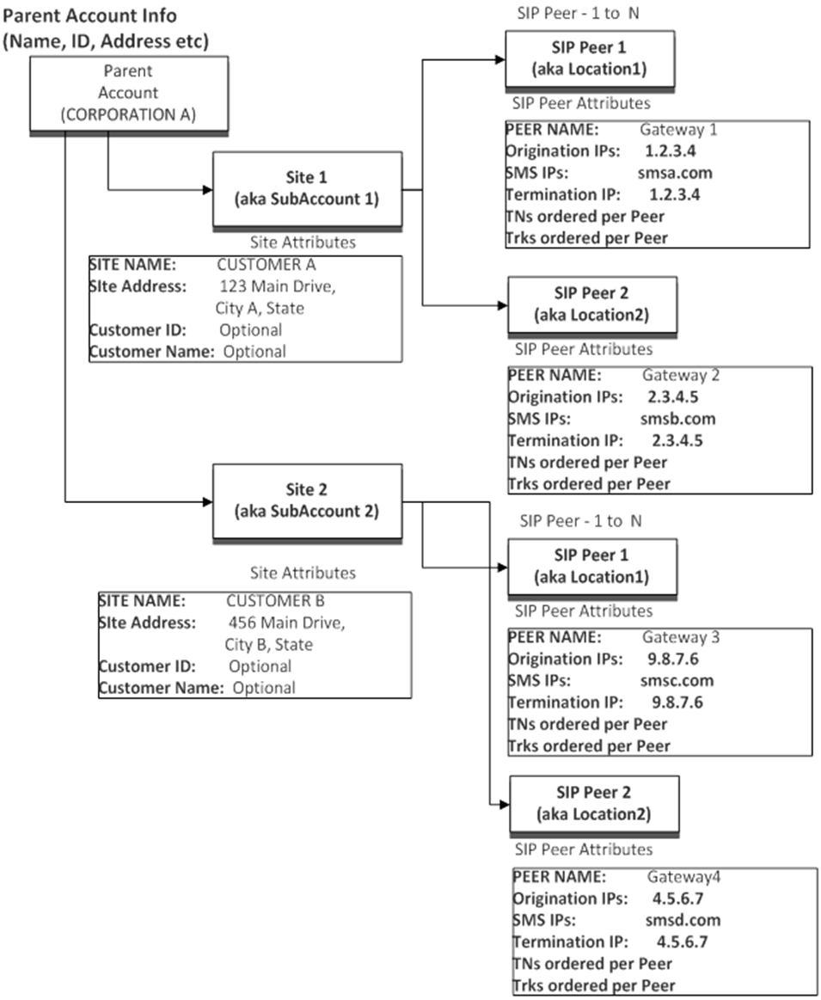

Managing Sub-accounts/Sites
Each account may have one or more Sites defined. Each Site may have one or more SIP Peers defined, which are the objects that contain the endpoints used to send and receive voice and data traffic. Most customers may only need a single Site and SIP Peer, but this structure allows customers with multiple products, channels, customers and physical locations to easily model their endpoints. In the Bandwidth Dashboard UI, "Sites" are referred to as "Sub-account", which is their most frequent use. SIP Peers are referred to as "Locations" as they are most frequently used to model customer's physical locations. Telephone numbers are associated with a single SIP Peer within a Site. These same rules are applied in the Bandwidth Dashboard UI's account structure.
Please note that both the Sites(SubAccounts) and SIP Peers(Locations) are not intended to grow in an unbounded manner. If you are finding the need to establish more than 50 Sites(SubAccounts), or 250 total SIP Peers(Locations) in order to address your business needs, please consult with your Bandwidth representative before moving beyond these thresholds. System responsiveness and / or network issues may result if these thresholds are exceeded.
